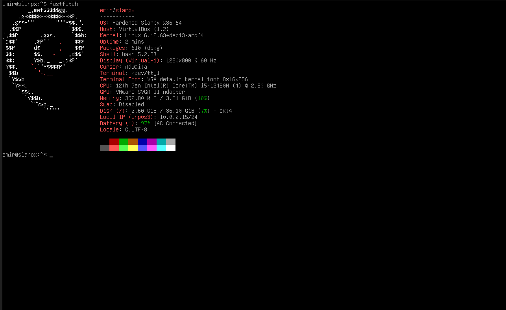

Hardened Slarpx is a Debian-based Linux distribution built with a strict security-first approach. It uses a multi-layered defense model with aggressive mitigations and extensive kernel-level hardening. Slarpx enforces system integrity through strict structural restrictions.
Due to its restrictive firewall policy, certain anonymization tools and network protocols are intentionally unsupported. The system focuses on active intervention and termination of unauthorized attack paths.

Slarpx Desktop Environment - CLI Only